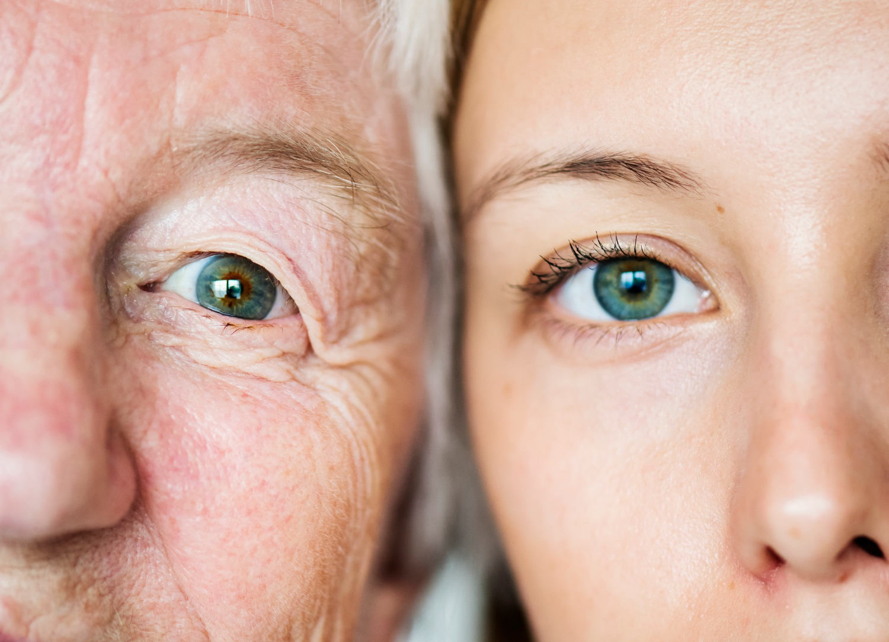

Kako starimo: šta se zapravo dešava sa tkivom lica
Starenje lica je prirodan biološki proces koji se odvija postepeno tokom života. Iako mnogi ljudi starenje povezuju isključivo sa pojavom bora, promene koje se dešavaju u tkivu lica mnogo su kompleksnije. Lice vremenom prolazi kroz promene u koži, masnom tkivu, mišićima, ali i u koštanoj strukturi.
U mladosti tkiva lica imaju jasnu potporu i volumen koji daje svež izgled. Kako godine prolaze, ova ravnoteža se postepeno menja. Dolazi do smanjenja kolagena i elastina u koži, masni jastučići se pomeraju ili smanjuju, a koža gubi čvrstinu i elastičnost.
Razumevanje ovih promena važno je jer savremeni anti-age pristupi ne posmatraju lice samo kroz jednu dimenziju. Umesto toga, fokus je na celokupnoj strukturi lica i načinu na koji se ona menja tokom vremena.
Promene u koži tokom starenja
Koža je prvi sloj na kome se primećuju znaci starenja. Sa godinama dolazi do smanjenja proizvodnje kolagena i elastina, proteina koji su odgovorni za čvrstinu i elastičnost kože.
Kolagen predstavlja osnovnu strukturu dermisa. Njegova vlakna daju koži otpornost i sposobnost da zadrži oblik. Kako proizvodnja kolagena opada, koža postaje tanja i manje otporna na spoljašnje uticaje.
Elastin, sa druge strane, omogućava koži da se vrati u prvobitni položaj nakon pokreta mimike. Smanjenje elastina dovodi do toga da koža sporije reaguje na pokrete, što može rezultirati pojavom linija i bora.
Pored unutrašnjih promena, na kožu utiču i spoljašnji faktori kao što su UV zračenje, zagađenje i životne navike. Dugotrajno izlaganje suncu jedan je od najvažnijih faktora koji ubrzavaju proces starenja kože.
Gubitak volumena u licu
Jedna od najvažnijih promena koja se dešava tokom starenja jeste gubitak volumena u licu. U mladosti lice ima jasnu trodimenzionalnu strukturu zahvaljujući rasporedu masnih jastučića.
Ovi jastučići nalaze se u različitim regijama lica – u jagodicama, obrazu i oko očiju. Oni daju licu punoću i mladalački izgled.
Sa godinama dolazi do postepenog smanjenja volumena masnog tkiva. Pored toga, masni jastučići mogu promeniti položaj zbog gravitacije i slabljenja potpornih struktura.
Rezultat ovih promena može biti pojava podočnjaka, naglašenijih nazolabijalnih bora ili gubitak definicije u predelu vilice.
Promene u mišićima i ligamentima
Mišići lica odgovorni su za mimiku i izražavanje emocija. Tokom života oni su stalno aktivni, što dovodi do formiranja dinamičkih linija koje kasnije mogu postati statične bore.
Ligamenti koji povezuju različite strukture lica takođe se menjaju tokom vremena. Njihova elastičnost se smanjuje, što može dovesti do spuštanja tkiva.
Ove promene često su razlog zbog kojeg lice može delovati opuštenije nego ranije. Konture vilice postaju manje jasne, a srednji deo lica gubi potporu.
Uticaj koštane strukture
Iako se često zanemaruje, i koštana struktura lica prolazi kroz promene tokom starenja. Studije su pokazale da dolazi do postepenog smanjenja gustine određenih kostiju lica.
Promene u strukturi jagodica ili vilice mogu dodatno uticati na raspored mekih tkiva. Kada potpora kostiju oslabi, koža i masno tkivo imaju manje oslonca, što može doprineti opuštanju lica.
Zbog toga savremena estetska medicina posmatra lice kao kombinaciju više slojeva – kože, masnog tkiva, mišića i kostiju.
Kako savremena anti-age medicina pristupa ovim promenama
Savremeni anti-age pristupi fokusiraju se na razumevanje uzroka starenja, a ne samo na površinske promene.
U nekim slučajevima tretmani su usmereni na poboljšanje kvaliteta kože i stimulaciju kolagena. U drugim situacijama cilj je nadoknada izgubljenog volumena ili zatezanje tkiva.
Važno je naglasiti da različiti pacijenti mogu imati različite potrebe. Kod nekih osoba primarne promene odnose se na kožu, dok kod drugih dominira gubitak volumena ili opuštanje tkiva.
Zbog toga se anti-age plan obično definiše individualno, uzimajući u obzir anatomiju lica, starost i očekivanja pacijenta.
Zašto je razumevanje procesa starenja važno
Razumevanje načina na koji lice stari omogućava realniji pristup estetskim procedurama. Umesto fokusiranja na jednu boru ili regiju, savremeni pristup posmatra lice kao celinu.
Ovakav pristup pomaže da rezultati budu prirodniji i dugoročniji. Umesto naglih promena, cilj je postepeno osvežavanje izgleda uz očuvanje karakterističnih crta lica.
Starenje je prirodan proces, ali razumevanje njegovih mehanizama omogućava da se određene promene ublaže i da lice zadrži svež i harmoničan izgled.